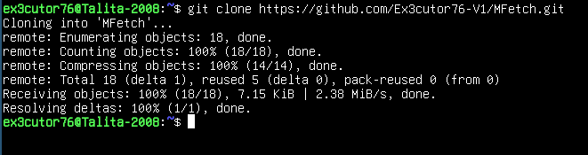
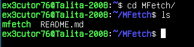
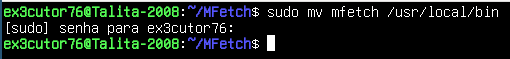
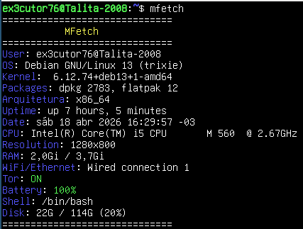

MFetch
O MFetch é um dos meus projetos que fiz enquanto estava entediado, você provavelmente no Linux World
deve ter visto eu recomendar neofetch ou até fastfetch no tópico Linux World, mas, eu decidi criar o meu
próprio fetch, já que alguns fetch ou eram demorados, ou eram mais pesados e bem... Eu queria algo leve,
simples e até mesmo útil e então criei o MFetch e bem, infelizmente o MFetch não está disponível para todas
as distros Linux, ele até funciona se tiver certos serviços como dpkg, systemd, NetworkManager ou até xrandr
só que só parcialmente mesmo, afinal nem toda distro vai conseguir ter esses certos requisitos, mas, garanto que
posso tentar fazer com que ele seja compatível até com windows, mas no momento está sendo mais disponível para distros
baseadas em Debian/Ubuntu.
O que o MFetch faz?
O MFetch ele faz a mesma coisa que o screenfetch e o fastfetch, a única diferença dele é que ele além de ser mais leve e mais
rápido contém algumas informações que esses fetch normalmente não possui, como por exemplo o MFetch pode te mostrar se você
está conectado na rede tor ou não.
Instalação do MFetch:
Primeiro passo é clonar o repositório github, que sim deixei disponível no meu github.

Comando: git clone https://github.com/Ex3cutor76-V1/MFetch.git
Segundo passo é literalmente entrar no repositório e veja se possui o arquivo "mfetch" que vai estar em verde, como sendo possível
ser executado, mas relaxa, isso é opcional.

comando: cd MFetch/
Terceiro passo é mover esse "mfetch" para o local de comandos do Linux.

Comando: sudo mv mfetch /usr/local/bin/
E prontinho agora você pode usar, só escrever: mfetch
Logo irá aparecer isso:

Bem simples não é? Eu sei que algumas coisas realmente faltam... Como por alguma coisa pra colorir a parte de memória RAM e o disco rígido
mas de resto, ele está bem melhor assim por enquanto, mas garanto que pode haver atualizações.
Opcional:
Depois disso você pode apagar a pasta: rm -rf MFetch/